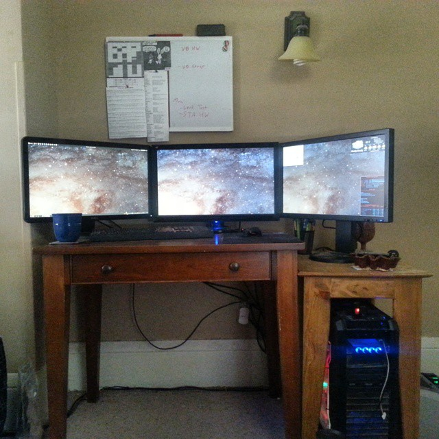
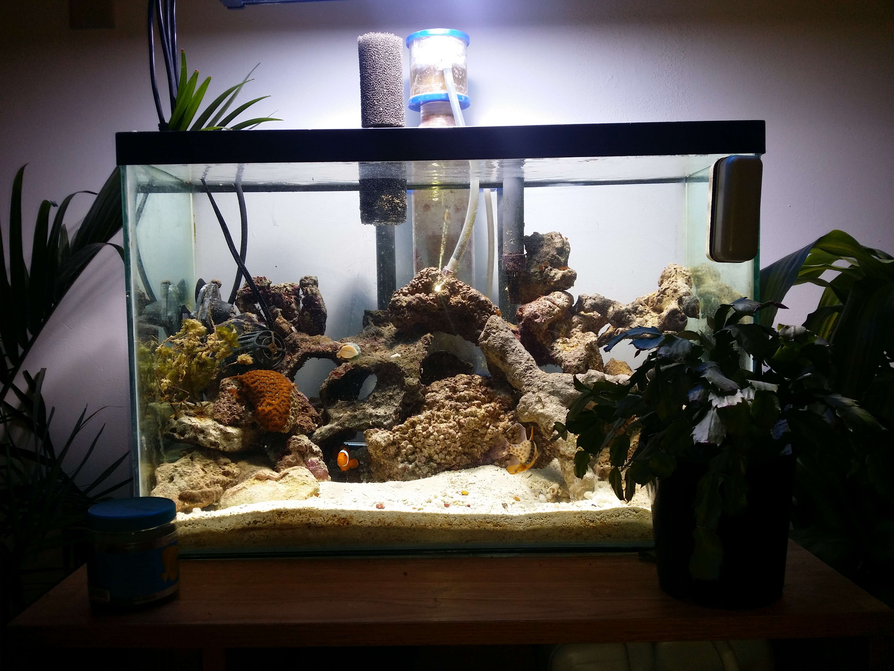
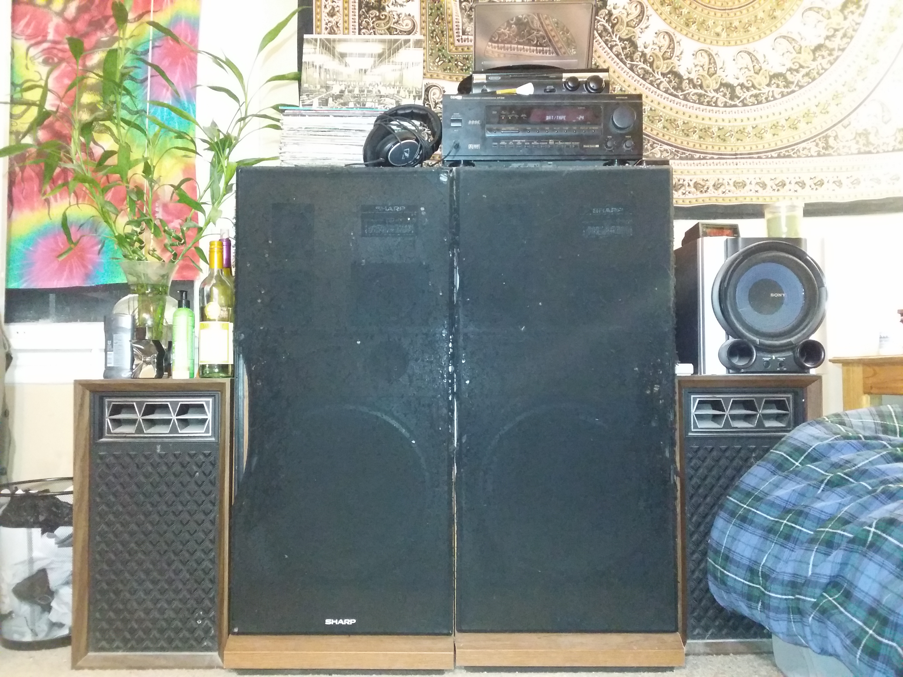

About Me
Personal
I spent the first 17 years of my life in a little town in northern Michigan named Rose City. My father was an automechanic for Consumer's Energy and my mother worked several different jobs from waitressing to autoparts delivery. Much of my free time involved riding dirt bikes and quads as well as playing '90s JRPGs on my SNES. I have two siblings: an older sister named Heather who lives in Nashville, Tennesee and a younger brother named Cole who will be graduating high school later on this year and attending Western Michigan University.
Computers
 From an early age I showed a keen interest in computers and some of my earliest memories involve playing PC games on my parent's old Windows 95 computer. Sometime in 2007, my uncle Scott was visiting to work on my parent's computer and he brought some spare parts he had and helped me build my own. If I remember correctly, it was an AMD Athlon 64 X2 build with 2GB of DDR memory and onboard graphics. In 2008, I discovered Linux via Ubuntu 8.04: Hardy Heron and from there my passion was born. Since then, I have moved on to Arch Linux and began operating my own home server. Currently, my server hosts several terabytes of media with around a 10 users and it has become quite a fun hobby.
Fishkeeping
 For my entire life I have kept aquariums. The hobby started with my parents who always kept enormous filthy goldfish aquariums with clownpuke colored gravel. When I moved into my dorm my first year of college, I decided that I wanted an aquarium again so I made a beautiful planted community tank in which I bread mollies and platies. After awhile, I moved onto cichlid tanks and, eventually, to my current beautiful saltwater reef.
Music
 Like many others, I have a very deep appreciation for music. I believe that humans have been inventing sounds for thousands of years with the purpose of controlling mood and entertainment. Much like my ancestors, I too use music as a tool to help myself work, relax, and stay entertained. I really enjoy Progressive Rock, Post Rock, and Jazz Hop. Some of my favorite artists are Ariel Pink, Cise Star, Minus the Bear, CHON, and Nujabes. I have a deep appreciation for music quality and have made my best effort to maximize the quality of my audio equipment.
Reading
 For most of my life I have been a bookworm. I fell in love with reading at a young age because of R.L. Stine. As I grew older, I discovered fantasy and quickly read my way through all of the big series' by authors such as George RR. Martin, Robert Jordan, Steven Erikson, etc. About the time that I turned 21, I discovered my love for science fiction. Since then, I have really enjoyed reading things from Alastair Reynolds, Neal Stephenson, Kim Stanley Robinson, and Cormac McCarthy.
For most of my life I have been a bookworm. I fell in love with reading at a young age because of R.L. Stine. As I grew older, I discovered fantasy and quickly read my way through all of the big series' by authors such as George RR. Martin, Robert Jordan, Steven Erikson, etc. About the time that I turned 21, I discovered my love for science fiction. Since then, I have really enjoyed reading things from Alastair Reynolds, Neal Stephenson, Kim Stanley Robinson, and Cormac McCarthy.